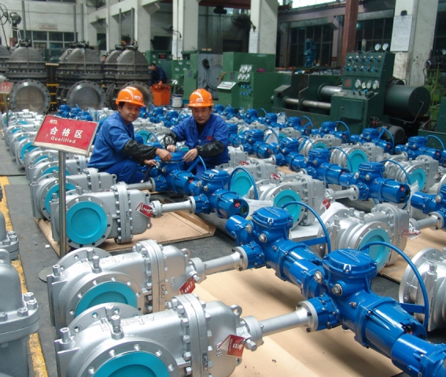
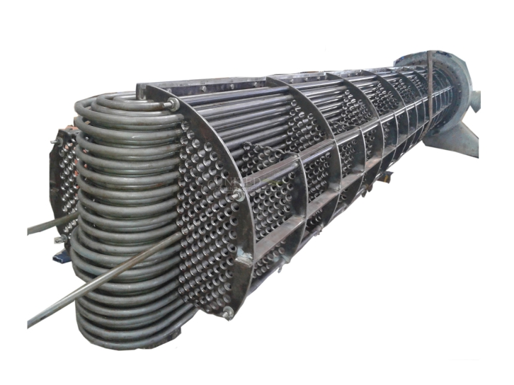
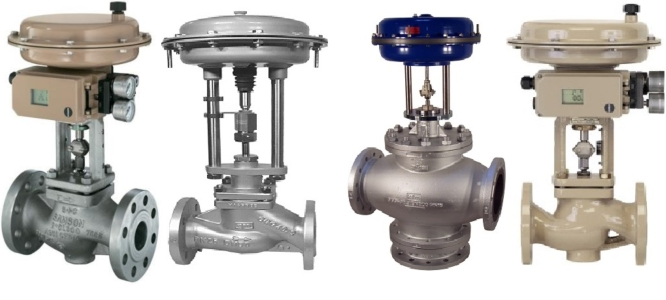
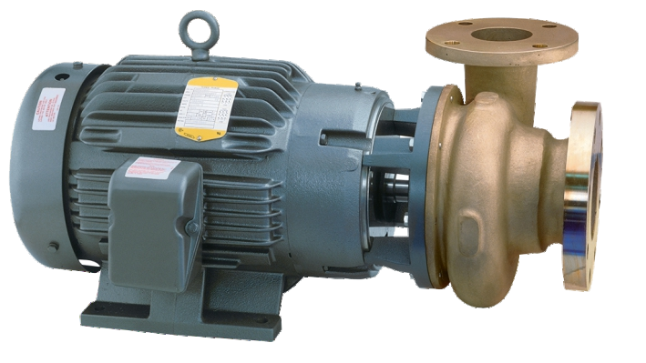

Procurement Services
Our major areas of interest include Procurement Services. We have one of the best procurement networks in the world. We can procure anywhere and deliver everywhere. We can also source any equipment either as a new one or as a replacement that is 100% compatible to the process and dimensionally interchangeable. We can help our customers to procure obsolete OEM equipments or parts from reputable, component machine fabricators and sub suppliers. We have a long list of products that we supply. An enquiry sent to us is equivalent to a project completed.
List of Equipment/Spare Parts
- Transmitters, Sensors, Flow meters, etc
- Valves, plugs and control valves
- Mechanic seals and gaskets
- Column intervals
- Boilers, Air fin cooler, and heat exchange tubes and spares
- Air fin cooler and heat exchanger bundles
- Mixers and pumps and their spare parts
- Pipes and cables
- Cranes and related spare parts
- Welding machines both automated , electrical , diesel and ordinary welding
- Catalysts and industrial chemicals
- Radioactive equipments for measurements and control
- Drill bits and deep well equipments
- Industrial Electric motors. (Customized and general)
- Gear boxes and bearings for all consideration and
- Header, axial fans, Hubs, etc.



